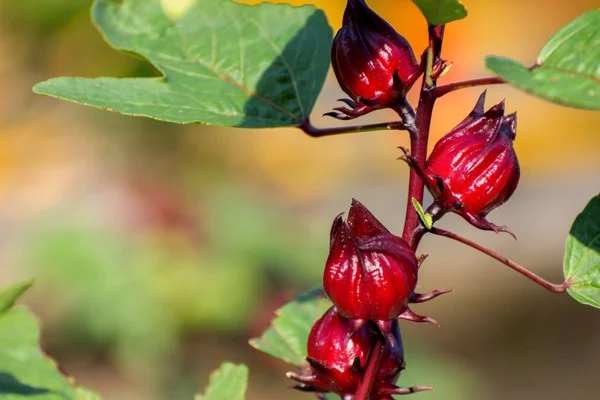
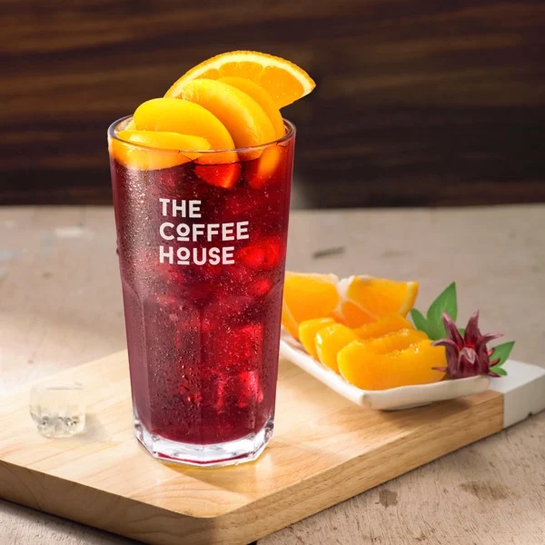
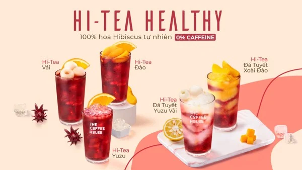

Tin tức | Teaholic
Hibiscus vốn là thực vật bản địa của Châu Phi, theo dòng chảy thời gian loại cây này dần trở nên phổ biến trên toàn thế giới.
Nguồn gốc trà Hibiscus
Hibiscus là một loài cây bụi với hoa màu đỏ mọc đơn lẻ. Hoa thường mọc ở nách lá và gần như không có cuống hoa. Mùa hoa nở rộ từ tháng 7 đến tháng 10. Lá, đài hoa và hạt cây Hibiscus được sử dụng để làm dược liệu. Đặc biệt, người ta thường sử dụng đài hoa phơi khô để chế biến thành trà sử dụng quanh năm với rất nhiều lợi ích cho sức khỏe và sắc đẹp.
Đài hoa Hibiscus sau khi thu hoạch thường được phơi khô, sử dụng để pha trà, làm mứt,...
Hibiscus được biết đến đầu tiên tại một số vùng thuộc Châu Phi, và là niềm tự hào của người dân bản địa. Sau đó, hoạt động mua bán nô lệ qua Thái Bình Dương ở những thế kỷ trước chính là con đường đã đưa Hibiscus đến các khu vực nhiệt đới và cận nhiệt đới ở Trung Mỹ, Brazil, Mexico và miền Tây Ấn Độ. Qua thời gian loại cây dần phổ biến ở nhiều quốc gia khác trên thế giới.
Từ khoảng đầu thế kỷ 20, Hibiscus được du nhập vào Việt Nam, và có nhiều tên gọi khác nhau như Bụp giấm, Lạc thần hoa, Hồng đài,... Với đặc tính không kén đất, ưa vùng đất đồi núi, khí hậu nóng ẩm, Hibiscus được trồng nhiều ở một số tỉnh như Hà Tây, Thái Nguyên, Sơn La, Lâm Đồng... Đặc biệt, Đà Lạt là một trong một số vùng đất cung cấp sản lượng Hibiscus lớn cho cả nước.
Hương vị của trà hoa Hibiscus
Với nhiều lợi ích cho sức khỏe và sắc đẹp như an thần, giảm căng thẳng, trẻ hoá da và cơ thể, giảm cân an toàn, hỗ trợ các bệnh về gan và đường tiêu hoá, giảm mỡ trong máu và cholesterol… trà hoa Hibiscus ngày càng được ưa chuộng tại Việt Nam.
Trà hoa Hibiscus gây ấn tượng bởi không có caffeine phù hợp để người dùng uống cả ngày mà không lo mất ngủ, hay bị say
Bên cạnh đó, chính hương vị khó cưỡng từ vị chua chua và mùi thơm đặc trưng đã để lại dấu ấn đậm sâu với những ai từng thưởng thức. Sắc màu đỏ ruby đậm đà, bắt mắt cũng điểm khiến trà hoa Hibiscus khó bị nhầm lẫn giữa muôn vàn loại trà khác trên thị trường.
Để cảm nhận rõ hương vị của loại trà này, bạn có thể thưởng thức bộ sưu tập mới Hi-Tea Healthy của Nhà với nền trà được chiết xuất từ 100% hoa Hibiscus từ nhiên, kết hợp cùng nhiều loại topping trái cây nhiệt đới đa dạng.